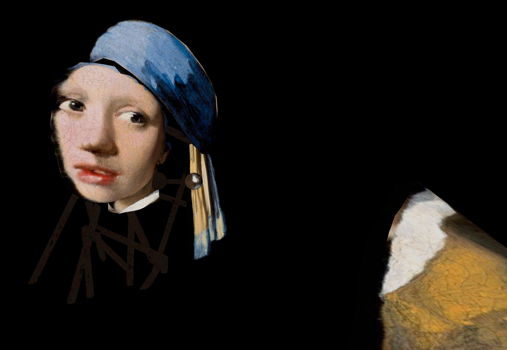

Liminal Museum
Name: Liminal Museum
Type: Infiltration
Plateform: Unity
Player: 1

Pitch
On PC, become a thief and infiltrate an art museum by moving around with your webcam or your keyboard and steal an element in each painting by entering them to discover their scaffolding.
Contexte
"Liminal Museum" is project created for a Game Jam in Ludus Academie in 1 month, the theme was step out of the box". Our gameplay revolves round famous painting and we got inspired by the game "Superliminal" for the use of the perspective et let the player discover these paintings from another angle.
Intention
- Understand how to use scripts for making game.
- Realize a collaborative work in Unity.
- Manage my time between the project and my classes.
- Discover new mechanic (use of the webcam).